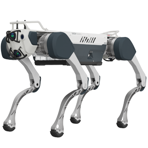

Quadruped · China · Strong signal · #31 R-Score rank
X30 Pro Robot Profile
Industrial inspection, patrol, emergency response, public safety, surveying, mapping, and all-weather autonomous navigation
Robot Snapshot
Core commercial and technical signals for X30 Pro.
Commercial Access
Purchase path, regional access, and import readiness.
Türkiye Market Access
Local sales path, distributor status, import readiness, and partner pipeline.
X30 Pro facts
- Company
- DEEP Robotics →
- Status
- Industrial-grade quadruped robot
- Use case
- Industrial inspection, patrol, emergency response, public safety, surveying, mapping, and all-weather autonomous navigation
- Height
- Official standing size: 1000 x 715 x 470 mm
- Runtime
- Official endurance: 2.5-4 hours
- Official source
- Open official source →
Robologai view
X30 Pro is tracked as a Quadruped robot for Industrial inspection, patrol, emergency response, public safety, surveying, mapping, and all-weather autonomous navigation. Robologai scores it by maturity, deployment signal, price clarity, media proof, and official source strength.
76/100 Strong signal
Maturity 4/5
Price clarity 4/5
Commercial 66
Mobility 93
AI signal 93
Strong signal
Readiness Breakdown
How Robologai scores X30 Pro across market-readiness signals.
Data Quality
Source confidence, pricing clarity, and deployment proof.
Source Notes
X30 Pro source trail.
Deployment Context
What X30 Pro signals about the physical AI market.
Compare Next